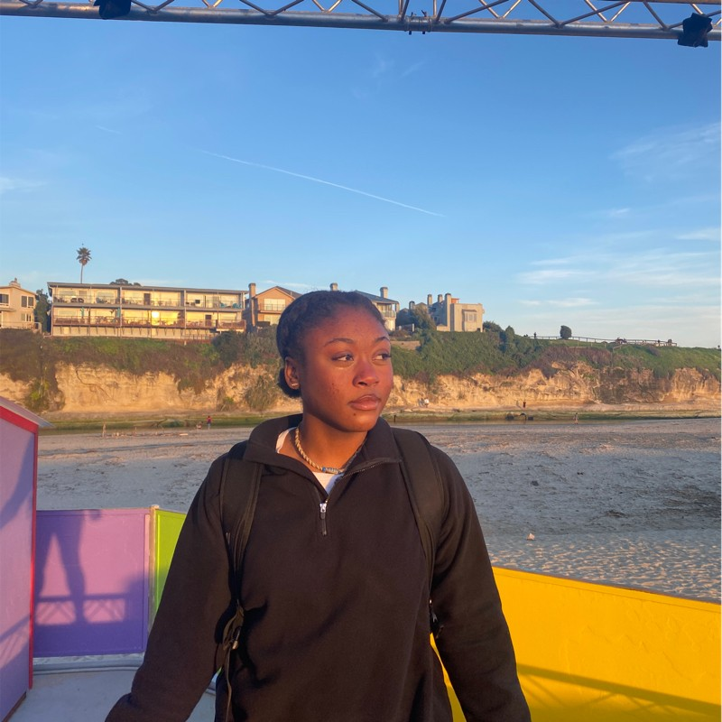

Patsy Fonkwo
CONTACT | PORTFOLIO | GITHUB | LINKTREE
Summary

Motivated student completing Computer Science degree. Dedicated to achieving demanding development objectives according to tight schedules. Ready to help achieve team goals.
Education
University of California, Irvine (GPA: 3.39)
2021 - 2025 | Bachelor in Computer Science and Engineering
Branham High School (GPA: 3.5)
2017 - 2021 | High School Diploma
Skills
- Programming in Python
- Programming in C++
- Visual Studio
- Object Oriented Programming (OOP)
- Positive Reinforcement Strategies
- Strong Communication and Interpersonal Skills
- Problem Solving
- AutoCAD (High School)
- RStudio (R Programming)
Relevant Coursework
- Programming in C/C++
- Introduction to Software Engineering
- Introduction to Digital Systems
- Multivariable Calculus
- Linear Algebra
- Classical Physics
- Network Analysis
- Boolean Logic and Discrete Structures
- Data Structure Implementation and Analysis
- Intermediate Python Programming
Work Experience
Boba Pub | Boba Barista (2020-22)
- Engaged in customer service and handled complaints
- Examined customer preferences to prescribe drink options
- Oversaw in-store executions of sales and promotions
- Provided on-the-job training for new members
Code Ninjas | Coding Instructor (2023-Present)
- Instructed students age 5-10 on programming concepts
- Debugged code
- Scheduled lesson plans for summer camps
- Collaborated with teams of 2-3 to deliver memorable student experiences
- Taught Roblox Development, File System Management, and circuit work, and microcontrollers
Organizations
- National Society of Black Engineers (NSBE), Secretary
- Women in Computer Science (WICS), Member